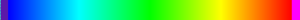
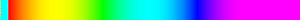
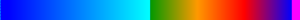
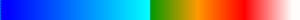
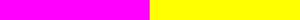
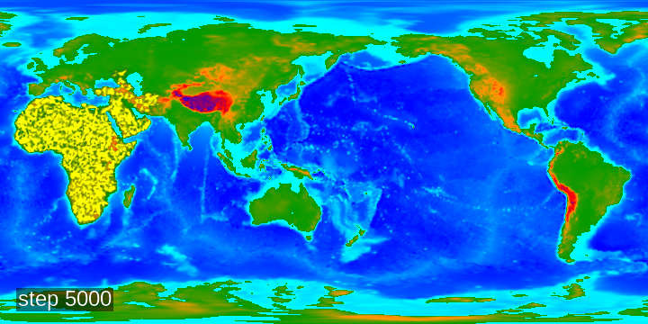

QDF2PNGNew¶
This tool creates a rectilinear projection of data saved in qdf files.
Code: QDF2PNGNew.cpp QDFImageExtractor.cpp
Usage¶
./QDF2PNGNew -g <qdf_grid> -q <qdf_data>[,<qdf_data>]*]
-s <w>x<h> -o <outpat> -a <arrayspec>,[<arrayspec>]*
[-c <operation>] [-r <lon_roll>] [-w <ww>x<hw>+<ox>+<oy> ][-t <text>[:<pos>] [-v]
or
./QDF2PNGNew -g <qdf_grid> -f <batch_file>
-s <w>x<h> -a <arrayspec>,[<arrayspec>]*
[-c <operation>] [-r <lon_roll>] [-t <text>[:<pos>]] [-v]
where
qdf_gridQDF containing a grid and geography.
qdf_dataQDF file containing data to be extracted which is not contained in <qdf_grid>.
batch_fileFile containing lines of the form:
<timestamp>":"<qdf_data>[,<qdf_data>]*":"<output>
wWidth of output png.
hHeight of output png.
wwWidth of depicted area in degrees (default 360).
hwHeight of depicted area in degrees (default 180).
oxLongitude offset of depicted area (default 0).
oyLatitude offset of depicted area (default -90).
outpatPattern for output pngs: the substring ‘###’ will be replaced with the array name.
arrayspecArray specification. Format:
array_spec ::= <array_name>[@<index>][|<lookup>]
array_name : name of array (s. below)
index : index of qdf in which to look (0: qdf_geogrid, 1-N: qdf-data in given order)
lookup : info for lookup, with format <lookup_name>[:<data>]* (s. below)
operationCompositing operator (currenly only: ‘over’ (simple alpha compositing)).
longrollLongitude for smallest x value (rolls image). To have all of africa on the left side of the image you should set roll to -25.
textText to be rendered on image.
posposition of text in image (
BL,CL,UL,BC,CC,UC,BR,CR,UR).
-vVerbose output.
Array Names
These are the array names used in arrayspec along with their meaning, and the array’s location in the qdf file (if it exists):
array name |
meaning |
dataset |
|---|---|---|
lon |
longitude |
Geography/Longitude |
lat |
latitude |
Geography/Latitude |
alt |
altitudes |
Geography/Altitude |
ice |
ice cover |
Geography/IceCover |
water |
water |
Geography/Water |
coastal |
coastal |
Geography/Coastal |
temp |
temperature |
Climate/AnnualMeanTemp |
rain |
rainfall |
Climate/AnnualRainfall |
npp |
total npp |
NPPVegetation/NPP |
npp_b |
base npp |
NPPVegetation/BaseNPP |
dist |
travel distance |
MoveStats/Dist |
time |
travel time |
MoveStats/Time |
pop |
population count |
(calculated) |
agent |
average of an agent variable |
(calculated) |
Lookups
The available Lookups and their parameters:
rainbow
Prameters: min, maxA rainbow going from blue (min) over green to red (max),with values > max being magenta and values < min being cyan
rainbow2
Parameters: min, maxA rainbow going from red (min) over green to blue (max),with values > max being magenta and values < min being cyan
geo
Prameters: min, sealevel, maxValues below sealevel are blue, above sealevel from green to magenta
geo2
Parameters: min, sealevel, maxValues below sealevel are blue, above sealevel from green to red, values abvove max are white.
twotone
Parameters: SepValue, RGBA1, RGBA2Values below SepValue are drawn with color RGBA1, values above with RGBA2.(Color format:#RRGGBBAAwhereRR,GG,BBandAAare hex values)
fadeout
Parameters: min, max, RGBAmax.Goes linearly from totally transparent to RGBAmax.
fadeto
Prameters: min, max, RGBAmin, RGBAmax.Goes linearly from RGBAmin to RGBAmax.
Call example
QDF2PNGNew -g ${TUT_TOP}/tutorial_06/output/tutorial_06/tut_pop-sapiens_SG_005000.qdf \
-q ${TUT_TOP}/tutorial_06/output/tutorial_06/tut_pop-sapiens_SG_005000.qdf \
-s 720x360 -o step_005000.png \
-a 'alt|geo:-6000:0:6000,pop_sapiens|fadeout:0:10:#FFFF00FF' \
-r -25 -c over -t "step 5000":BL:20
This creates this image
